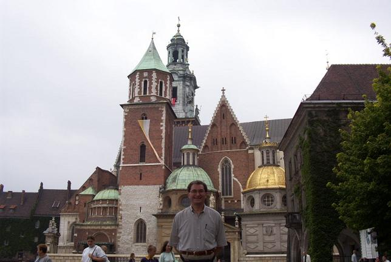
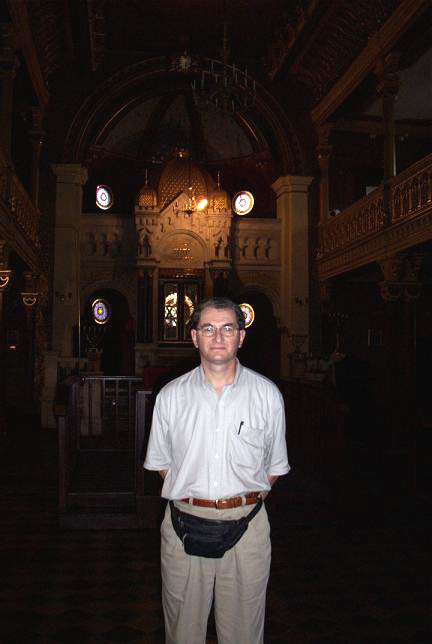
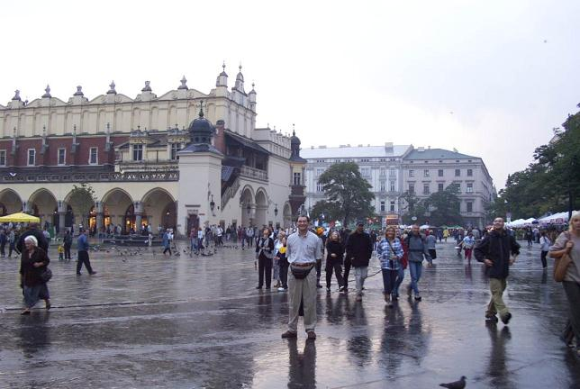

The first picture is of Wawel Cathedral, located next to Wawel Castle on top of a hill dominating the city of Cracow. The second one is of the interior of Tempel Synagogue, a gorgeously restored 19th century building in the Kazimierz neighborhood. The final picture is of historic Cloth Hall, located in the center of the main market square, the largest medieval plaza in Europe. St. Mary’s Church is behind the photographer.



Back to the Warsaw and Cracow Section
Back to the trip homepage